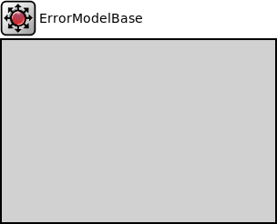

Package: inet.physicallayer.wireless.common.base.packetlevel
ErrorModelBase
compound moduleThis module servces as the base module for error models.
Inheritance diagram
The following diagram shows inheritance relationships for this type. Unresolved types are missing from the diagram.
Known subclasses
| Name | Type | Description |
|---|---|---|
| ApskErrorModel | compound module |
This error model determines packet error rate, bit error rate, and symbol error rate by using the well-known formula that corresponds to the modulation. It assumes no forward error correction or any other techinque is used in the physical signal. |
| Ieee80211BerTableErrorModel | compound module | (no description) |
| Ieee80211NistErrorModel | compound module | (no description) |
| Ieee80211YansErrorModel | compound module | (no description) |
| StochasticErrorModel | compound module |
This error model provides parameters to specify the constant packet error rate, bit error rate, and symbol error rate for receptions independent of any interfering transmission or noise. |
Parameters
| Name | Type | Default value | Description |
|---|---|---|---|
| corruptionMode | string | "packet" | |
| snirMode | string | "min" | |
| snirOffset | double | 0dB |
offset the calculated SNIR before further computing the PER, BER, SER or corrupt bits and symbols this can be used, for example, to represents cross symbol interference due to OFDM lobe overlapping, symbol frequency/time offset mismatch, and symbol frequency/time size mismatch |
Properties
| Name | Value | Description |
|---|---|---|
| display | i=block/broadcast | |
| class | ErrorModelBase |
Source code
// // This module servces as the base module for error models. // module ErrorModelBase like IErrorModel { parameters: string corruptionMode @enum("packet","chunk","byte","bit") = default("packet"); string snirMode @enum("min","mean") = default("min"); double snirOffset @unit(dB) = default(0dB); // offset the calculated SNIR before further computing the PER, BER, SER or corrupt bits and symbols // this can be used, for example, to represents cross symbol interference due to OFDM lobe overlapping, symbol frequency/time offset mismatch, and symbol frequency/time size mismatch @display("i=block/broadcast"); @class(ErrorModelBase); }File: src/inet/physicallayer/wireless/common/base/packetlevel/ErrorModelBase.ned
 This documentation is released under the Creative Commons license
This documentation is released under the Creative Commons license